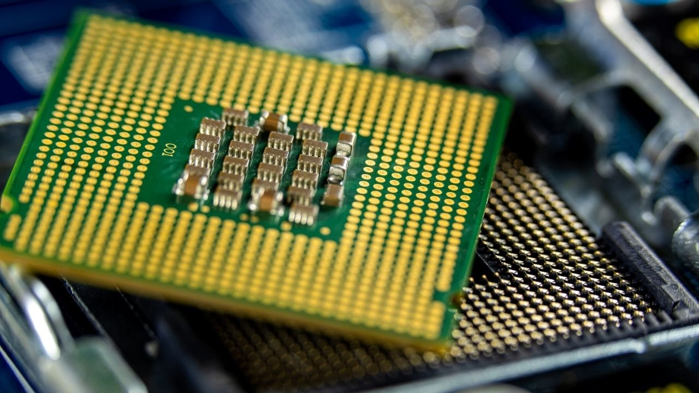

Intel and Ryzen

Adrus GPU

Power Supply Internals

Backside of an Intel Cpu

Asus TUF 4060ti

Power Supply Unit
Overview: The FAQ's
This website serves to introduce the user to the realm of computer components, namely the three most vital parts: the graphics card, the central processing units, and the power supply units. The navigation bar will take the user to different pages for their respective components, along with some quality of life filter pages with the components of the database. Further information will be disclosed on the respective pages for ease of convenience, but a brief introduction will be listed below.
Overview: The Pages
The "Graphics Processing Units" will go over the facts of a graphics card while allowing the user to filter between a selection with brand and usage type as the two filters and a chart of their choice for wattage.
The "Central Processing Units" will go over the facts of a central processing unit, allowing the user to filter between brand, pricing, and a chart for usage type.
The "Power Supply Units" will go over the facts of a power supply unit, and the user will be able to filter through the selection with rated wattage, their 80 PLUS rating, and a chart for brand names.
The "Optimal Combinations" page will go over specifically the best possible combination between a CPU and a GPU. There will only be two filter, which allows the user to select either the cpu or gpu which then would result in a list of cards with best possible combinations for this cpu/gpu.
The "Database" will be a page with the entire database at the user's disposal for filtering. As such, there will be quite a wide variety of filter options.
The graphics processor is the component of the computer that visualizes the software onto the monitor screen. In essence, it serves as the eye of the computer.
The central processor is the brain of the computer; it connects every component together to make one cohesive, functioning machine.
The power supply, as its name implies, provides electricity to the computer and its components in a safe, efficient manner, depending on its 80Plus rating.